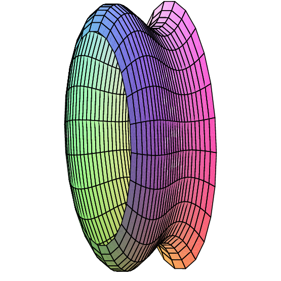
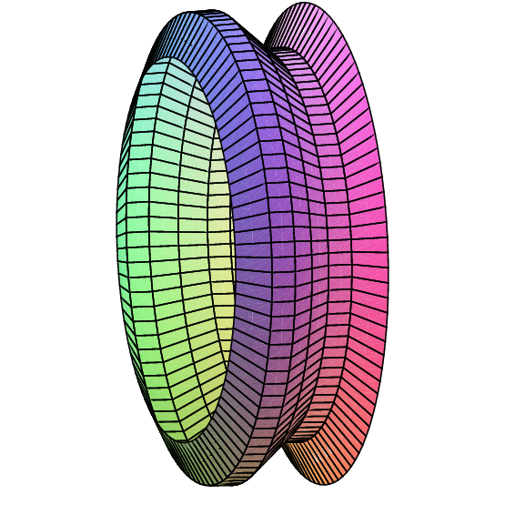

Another geometric question that arises naturally is: "What is the surface area of a volume?'' For example, what is the surface area of a sphere? More advanced techniques are required to approach this question in general, but we can compute the areas of some volumes generated by revolution.
As usual, the question is: how might we approximate the surface area? For a surface obtained by rotating a curve around an axis, we can take a polygonal approximation to the curve, as in the last section, and rotate it around the same axis. This gives a surface composed of many "truncated cones;'' a truncated cone is called a frustum of a cone. Figure 9.10.1 illustrates this approximation.
|  |  |
So we need to be able to compute the area of a frustum of a cone. Since the frustum can be formed by removing a small cone from the top of a larger one, we can compute the desired area if we know the surface area of a cone. Suppose a right circular cone has base radius $r$ and slant height $h$. If we cut the cone from the vertex to the base circle and flatten it out, we obtain a sector of a circle with radius $h$ and arc length $2\pi r$, as in figure 9.10.2. The angle at the center, in radians, is then $2\pi r/h$, and the area of the cone is equal to the area of the sector of the circle. Let $A$ be the area of the sector; since the area of the entire circle is $\ds \pi h^2$, we have $$ \eqalign{{A\over\pi h^2}&={2\pi r/h\over 2\pi}\cr A &= \pi r h.\cr} $$
Now suppose we have a frustum of a cone with slant height $h$ and radii $\ds r_0$ and $\ds r_1$, as in figure 9.10.3. The area of the entire cone is $\ds \pi r_1(h_0+h)$, and the area of the small cone is $\ds \pi r_0 h_0$; thus, the area of the frustum is $\ds \pi r_1(h_0+h)-\pi r_0 h_0=\pi((r_1-r_0)h_0+r_1h)$. By similar triangles, $${h_0\over r_0}={h_0+h\over r_1}.$$ With a bit of algebra this becomes $\ds (r_1-r_0)h_0= r_0h$; substitution into the area gives $$ \pi((r_1-r_0)h_0+r_1h)=\pi(r_0h+r_1h)=\pi h(r_0+r_1)=2\pi {r_0+r_1\over2} h = 2\pi r h. $$ The final form is particularly easy to remember, with $r$ equal to the average of $\ds r_0$ and $\ds r_1$, as it is also the formula for the area of a cylinder. (Think of a cylinder of radius $r$ and height $h$ as the frustum of a cone of infinite height.)
Now we are ready to approximate the area of a surface of revolution. On one subinterval, the situation is as shown in figure 9.10.4. When the line joining two points on the curve is rotated around the $x$-axis, it forms a frustum of a cone. The area is $$ 2\pi r h= 2\pi {f(x_i)+f(x_{i+1})\over2} \sqrt{1+(f'(t_i))^2}\,\Delta x. $$ Here $\ds \sqrt{1+(f'(t_i))^2}\,\Delta x$ is the length of the line segment, as we found in the previous section. Assuming $f$ is a continuous function, there must be some $\ds x_i^*$ in $\ds [x_i,x_{i+1}]$ such that $\ds (f(x_i)+f(x_{i+1}))/2 = f(x_i^*)$, so the approximation for the surface area is $$\sum_{i=0}^{n-1} 2\pi f(x_i^*)\sqrt{1+(f'(t_i))^2}\,\Delta x.$$ This is not quite the sort of sum we have seen before, as it contains two different values in the interval $\ds [x_i,x_{i+1}]$, namely $\ds x_i^*$ and $\ds t_i$. Nevertheless, using more advanced techniques than we have available here, it turns out that $$\lim_{n\to\infty} \sum_{i=0}^{n-1} 2\pi f(x_i^*)\sqrt{1+(f'(t_i))^2}\,\Delta x= \int_a^b 2\pi f(x)\sqrt{1+(f'(x))^2}\,dx$$ is the surface area we seek. (Roughly speaking, this is because while $\ds x_i^*$ and $\ds t_i$ are distinct values in $\ds[x_i,x_{i+1}]$, they get closer and closer to each other as the length of the interval shrinks.)
Example 9.10.1 We compute the surface area of a sphere of radius $r$. The sphere can be obtained by rotating the graph of $\ds f(x)=\sqrt{r^2 - x^2}$ about the $x$-axis. The derivative $f'$ is $\ds -x/\sqrt{r^2-x^2}$, so the surface area is given by $$\eqalign{ A&=2\pi \int_{-r }^r \sqrt{r^2 - x^2}\sqrt{1+{x^2\over r^2-x^2}}\,dx\cr &=2\pi \int_{-r }^r \sqrt{r^2 - x^2}\sqrt{r^2\over r^2-x^2}\,dx\cr &=2\pi \int_{-r }^r r\,dx=2\pi r\int_{-r }^r 1\,dx=4\pi r^2\cr}$$
If the curve is rotated around the $y$ axis, the formula is nearly identical, because the length of the line segment we use to approximate a portion of the curve doesn't change. Instead of the radius $\ds f(x_i^*)$, we use the new radius $\ds \bar x_i= (x_i+x_{i+1})/2$, and the surface area integral becomes $$\int_a^b 2\pi x\sqrt{1+(f'(x))^2}\,dx.$$
Example 9.10.2 Compute the area of the surface formed when $\ds f(x) =x^2$ between $0$ and $2$ is rotated around the $y$-axis.
We compute $f'(x)= 2x$, and then $$2\pi\int_0^2 x\sqrt{1+4x^2}\,dx={\pi\over6}(17^{3/2}-1),$$ by a simple substitution.
Exercises 9.10
Ex 9.10.1 Compute the area of the surface formed when $\ds f(x)=2\sqrt{1-x}$ between $-1$ and $0$ is rotated around the $x$-axis. (answer)
Ex 9.10.2 Compute the surface area of example 9.10.2 by rotating $\ds f(x)=\sqrt x$ around the $x$-axis.
Ex 9.10.3 Compute the area of the surface formed when $\ds f(x)=x^3$ between $1$ and $3$ is rotated around the $x$-axis. (answer)
Ex 9.10.4 Compute the area of the surface formed when $\ds f(x)=2 +\cosh (x)$ between $0$ and $1$ is rotated around the $x$-axis. (answer)
Ex 9.10.5 Consider the surface obtained by rotating the graph of $\ds f(x)=1/x$, $x\geq 1$, around the $x$-axis. This surface is called Gabriel's horn or Toricelli's trumpet. In exercise 13 in section 9.7 we saw that Gabriel's horn has finite volume. Show that Gabriel's horn has infinite surface area.
Ex 9.10.6 Consider the circle $\ds (x-2)^2+y^2 = 1$. Sketch the surface obtained by rotating this circle about the $y$-axis. (The surface is called a torus.) What is the surface area? (answer)
Ex 9.10.7 Consider the ellipse with equation $\ds x^2/4+y^2 = 1$. If the ellipse is rotated around the $x$-axis it forms an ellipsoid. Compute the surface area. (answer)
Ex 9.10.8 Generalize the preceding result: rotate the ellipse given by $\ds x^2/a^2+y^2/b^2=1$ about the $x$-axis and find the surface area of the resulting ellipsoid. You should consider two cases, when $a>b$ and when $a< b$. Compare to the area of a sphere. (answer)